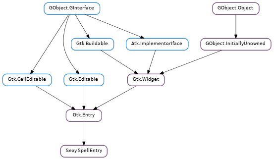

Sexy.SpellEntry¶

Methods¶
| static | new() |
| activate_default_languages() | |
| activate_language(lang) | |
| deactivate_language(lang) | |
| get_active_languages() | |
| get_checked() | |
| get_language_name(lang) | |
| get_languages() | |
| is_checked() | |
| language_is_active(lang) | |
| set_active_languages(langs) | |
| set_checked(checked) |
Virtual Methods¶
| do_word_check(word) |
Signals¶
| Name | Short Description |
|---|---|
| word-check | The ::word-check signal is emitted whenever the entry has to check a word. |
Fields¶
| Name | Type | Access | Description |
|---|---|---|---|
| g_type_instance | GObject.TypeInstance | r | |
| parent_instance | Gtk.Widget | r | |
| parent_object | Gtk.Entry | r | |
| qdata | GLib.Data | r | |
| ref_count | int | r |
Class Details¶
- class Sexy.SpellEntry(**kwargs)¶
Bases: Gtk.Entry
- static new()¶
Returns: a new Sexy.SpellEntry. Return type: Gtk.Widget Creates a new Sexy.SpellEntry widget.
- activate_default_languages()¶
Activate spell checking for languages specified in the $LANG or $LANGUAGE environment variables. If none is found it defaults to “en”. These languages are activated by default, so this function need only be called if they were previously deactivated.
- activate_language(lang)¶
Parameters: lang (str) – The language to use in a form Enchant understands. Typically either a two letter language code or a locale code in the form xx_XX. Raises : GLib.GError Returns: False if there was an error. Return type: bool Activate spell checking for the language specifed.
- deactivate_language(lang)¶
Parameters: lang (str) – The language in a form Enchant understands. Typically either a two letter language code or a locale code in the form xx_XX. Deactivate spell checking for the language specifed.
- get_active_languages()¶
Returns: A list of language codes (“en”, “de_DE”, etc). The list should be freed with GLib.SList.free_full () and GLib.free (). Return type: [str] Retrieve a list of the currently active languages.
- get_checked()¶
Returns: True if the entry has spell-checking enabled. Return type: bool Queries a Sexy.SpellEntry and returns whether the entry has spell-checking enabled.
- get_language_name(lang)¶
Parameters: lang (str) – The language code to lookup a friendly name for. Returns: The name of the locale. Should be freed with GLib.free () Return type: str Get a friendly name for a given locale.
- get_languages()¶
Returns: a new GLib.List object, or None on error. Should be freed with GLib.SList.free_full () and GLib.free (). Return type: [str] Retrieve a list of language codes for which dictionaries are available.
- is_checked()¶
Returns: True if the entry has spell-checking enabled. Return type: bool Queries a Sexy.SpellEntry and returns whether the entry has spell-checking enabled. Use Sexy.SpellEntry.get_checked () instead.
Deprecated since version 1.0: 1
- language_is_active(lang)¶
Parameters: lang (str) – The language to use, in a form enchant understands. Returns: True if the language is active. Return type: bool Determine if a given language is currently active.
- set_active_languages(langs)¶
Parameters: langs ([str]) – A list of language codes to activate, in a form Enchant understands. Typically either a two letter language code or a locale code in the form xx_XX. Raises : GLib.GError Returns: False if there was an error. Return type: bool Activate spell checking for only the languages specified.
Signal Details¶
- word_check(word)¶
Signal Name: word-check Flags : RUN_LAST Parameters: word (str) – The word to check. Returns: False to indicate that the word should be marked as correct. Return type: bool The ::word-check signal is emitted whenever the entry has to check a word. This allows the application to mark words as correct even if none of the active dictionaries contain it, such as nicknames in a chat client.